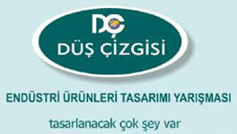
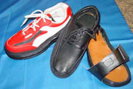
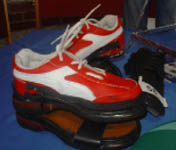
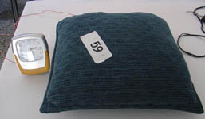
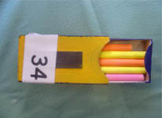

|
Özel
Samanyolu Eðitim Kurumlarý Türkiye'de ilk defa lise ve ilk
öðretim okulu öðrencilere yönelik bir tasarým yarýþmasý düzenledi.
1. Ulusal Düþ Çizgisi Endüstri Ürünleri Tasarým Organizasyonu
22-23 Mayýs 2004 tarihlerinde Ankara Kocatepe Kültür Merkezi'nde
gerçekleþtirildi. Yarýþma'ya 18 ilden 38 okul 96 proje katýldý.
Yarýþma'ya katýlan eserler Türkiye'nin seçkin üniversitelerinden
ve firmalarýndan uzmanlarýn bulunduðu ve ODTÜ Endüstri Ürünleri
Tasarýmý Bölümü öðretim üyesi Dr. Fatma Korkut baþkanlýðýndaki
dokuz kiþilik bir jüri tarafýndan deðerlendirildi. Birinciye
4 Milyar TL olmak üzere toplam 15 Milyar TL ödül daðýtýldý.
Gençleri
görünce geleceðin güzel olacaðýna olan ümidinin daha da arttýðýný
anlatan Ankara Milli Eðitim Müdürü Murat Bey Balta, "Ülkemizin
yarýný emin ellerde. Sizleri görünce gururlandým." ifadesini
kullandý. Ödül törenine Gaziantep Milletvekili Mehmet Sarý,
Türk Patent Enstitüsü Baþkaný Yusuf Balcý, Özel Öðretim Okullarý
Genel Müdürü Öner Güven, Genel Müdür Yardýmcýsý Mustafa Çandýr
da katýldý.
Organizasyonun
koordinatörü, Estetik ve Sanat Eðitmeni Engin Çoban, yaptýðý
açýklamada þunlarý belirtmiþtir: "Bu organizasyonun ana
temasý tasarým þuurunun ilk ve orta öðretim seviyesine indirgenme
çabasýdýr. Bu da büyük ölçüde kýsýtlý imkan ve destekle mümkün
olmuþtur. Dünyada ilk defa bu seviyede EÜT organizasyonu düzenlenmektedir.
Çok ciddi bir çalýþmanýn ürünüdür. Düþ Çizgisi'nin ana temasý
olan Endüstri ürünleri tasarýmý çok net anlaþýlamamýþtýr.
Umudum o ki gelecek yýl yapýlacak olan Uluslar arasý Endüstri
Ürünleri tasarýmý yarýþmasýnda daha geniþ kitlelere ulaþacak
daha profesyonel bir çalýþmanýn içinde olacaðýz."
|

|

|
|
|
Ferit
Ateþ / "Deðiþebilen Ayakkabý"
|
Ferit
Ateþ birincilik ödülünü alýrken
|
Öðrencilerin
birbirinden ilginç projeler sunduklarý yarýþmada, Antalya
ATSO Anadolu Güzel Sanatlar Lisesi öðrencisi Ferit Ateþ, "Deðiþebilen
Ayakkabý, tek tabanda 3 ayakkabý tasarýmý" projesiyle
birinciliðe layýk görüldü. Ferit Ateþ, "Artýk ayakkabýlar
eskidi, rengi bozuldu diye atýlmayacak. Kilit, kýzak ve fermuarlarý
deðiþebilen ayakkabýlar olacak. Tek tabanlý ayakkabý, istendiðinde
terlik, istendiðinde spor ayakkabýsý ve normal ayakkabýya
dönüþebilecek." dedi. 4 milyar deðerinde para ödülünü
ve plaketini Gaziantep Milletvekili Mehmet Sarý'nýn elinden
alan Ateþ, deðiþik projelere imza atmak istediðini söyledi.
|

|

|
|
|
Deniz
Mekik / "Titreyen Yastýk"
|
Yasin
Menekþe / "Tahta Silici"
|
"Sokak Lambasý" |
Yarýþmaya
Devrek Anadolu Lisesi'nden "Titreyen Yastýk" projesiyle
katýlan Deniz Mekik ikinci olarak 3 milyar liralýk ödülü aldý.
Uyanma güçlüðü çekenler ile iþitme engellilerin titreyen yastýkla
artýk her sabah istedikleri saatte uyanabileceklerini dile
getiren Deniz Mekik, "Alarmlý saat mekanizmasý ile titreþimle
ikaz veren titreyen yastýk, iþe geç kalma kâbusuna son verecek."
diye konuþtu.
Ýstanbul
Sevgi Çiçeði Anafen Ýlköðretim Okulu öðrencisi Yasin Menekþe'nin
hazýrladýðý "Tahta Silici" projesi ise üçüncü oldu.
Yasin Menekþe, iki milyar lira ödül almaya hak kazandý. Tahta
silgisine çekmece ilave eden Menekþe, bu sayede tahta silgisinin
hem silgi hem de tebeþir saklama kutusu olarak kullanýlmasýný
saðladý.
Samanyolu
Eðitim Kurumlarý Genel Müdürü Cemil Koca, organizasyonun devlet
ve özel okullarýn kolektif hareketi olduðunu kaydetti. Koca,
"Yarýþmaya katýlan gençlerimizin hepsi meraklý, istekli,
arzulu. Eserlerini severek, bilerek, özenerek yapmýþlar."
dedi. Yarýþmada 15 milyar lira para ödülü daðýttýklarýný dilegetiren
Koca, yarýþmanýn daha da geliþerek ve yaygýnlaþarak devam
edeceðini ifade etti.
Daha
Fazla bilgi için:
|

{kind=link}